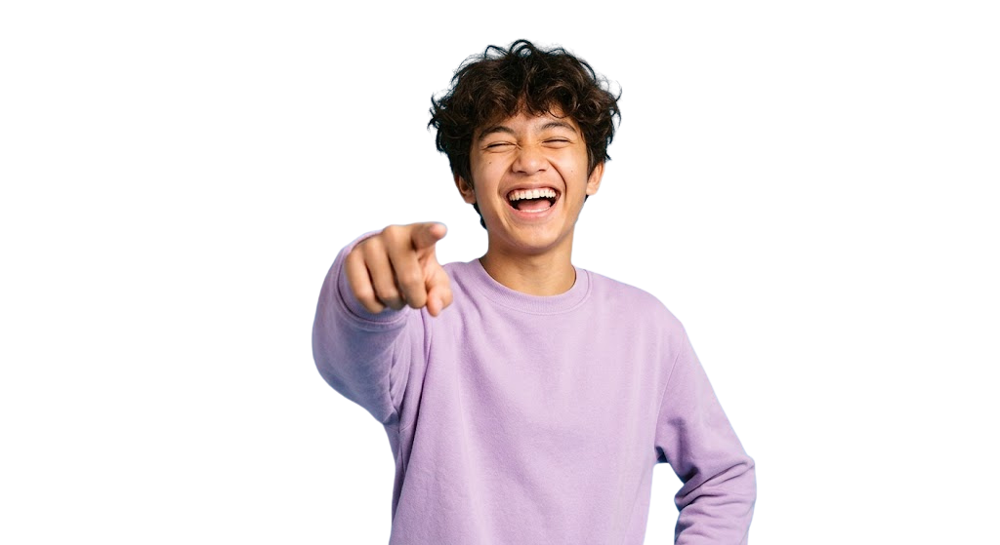

Edukasi kebiasaan
sehat remaja.
Marihat hadir sebagai platform edukasi terpercaya untuk membantu Anda memahami kesehatan fisik dan mental sejak dini. Bersama kami, mari jaga aset terpenting tubuh dan pikiran Anda demi mewujudkan masa depan yang optimal.

Tentang MARIHAT (Mari Sehat)
MariHat adalah platform edukasi kesehatan bagi remaja yang menyediakan informasi, quiz interaktif, dan pembelajaran untuk membantu membangun kebiasaan hidup sehat yang mendukung proses belajar.
Website ini hadir sebagai ruang belajar yang santai dan tidak membosankan, supaya remaja bisa lebih sadar akan kebiasaan sehat tanpa merasa dipaksa. Harapannya, MariHat bisa jadi teman belajar yang bikin kamu lebih peduli sama diri sendiri dan mulai membangun gaya hidup yang lebih baik dari sekarang.
Kenapa Kesehatan itu Penting bagi REMAJA?

Kenapa kesehatan remaja itu penting?
Masa Pertumbuhan Emas
Mendukung perkembangan fisik dan otak yang sangat pesat.
Dongkrak Prestasi
Tubuh yang bugar meningkatkan fokus belajar, kreativitas, dan produktivitas.
Investasi Masa Depan
Membangun kebiasaan sehat sejak dini untuk mencegah penyakit kronis saat dewasa.
Kemandirian Positif
Melatih remaja mengambil keputusan yang bertanggung jawab bagi dirinya sendiri.
Kesehatan Mental
Membantu mengelola stres, emosi, dan tekanan sosial dengan lebih baik.
Siklus Generasi Sehat
Mendukung perkembangan fisik dan otak yang sangat pesat.